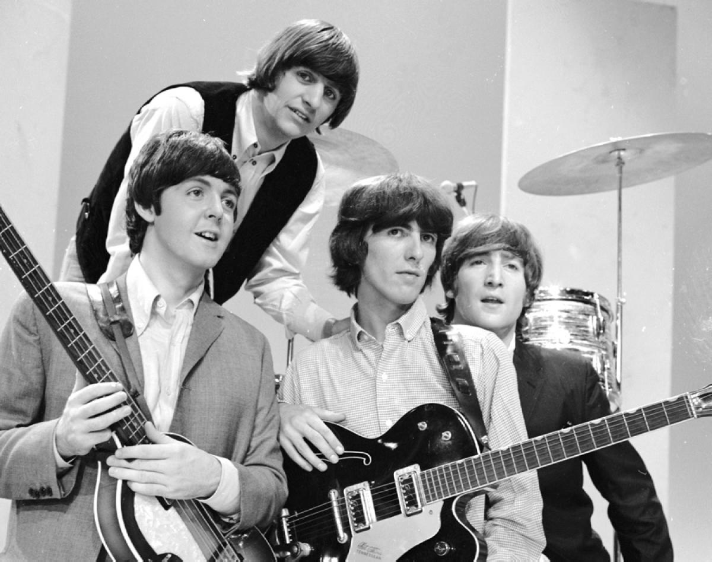

1960-1962: Начало пути
Формирование группы в Ливерпуле, первые выступления в "The Cavern Club" и поиск уникального звучания.
От зарождения в клубах Ливерпуля до мирового признания и легендарного статуса.
Формирование группы в Ливерпуле, первые выступления в "The Cavern Club" и поиск уникального звучания.
Взлёт популярности, толпы фанатов по всему миру, революция в поп-музыке и альбомы, ставшие классикой.
Психоделический период, новые стилистические поиски, выпуск "Sgt. Pepper's Lonely Hearts Club Band" и расцвет студийного мастерства.